| Nome comum | Nome científico | Tipo | Parte | Origem geográfica | Bioma/Habitat nativo ou de naturalização | Polinização | Características | Dispersão |
|---|---|---|---|---|---|---|---|---|
| Abacate | Persea americana | 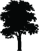 | América do Norte (México) | Florestas de regiões tropicais e subtropicais (árvore) | 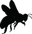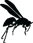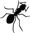 | Maior produção com polinizadores. É polinizado principalmente por dípteros (moscas) e outros insetos nativos, como abelhas sem ferrão (uruçu do litoral do Nordeste ou Melipona scutellaris), e vespas, mas também por outros insetos de origem europeia como a abelha Apis sp., uma espécie de mosca e, de forma secundária, por formigas. Cultivado há mais de 10.000 anos nas Américas, provavelmente é originário da região central do México. | - | |
| Abacaxi | Ananas comosus | América do Sul | Savanas Cerrado (bromeliácea) |
Os beija-flores são seus principais polinizadores naturais. A planta é nativa da América do Sul e originária de áreas entre Brasil e Paraguai. Existem evidências de que sua domesticação pode ter sido iniciada entre 6.000 e 10.000 anos atrás. | - | |||
| Abiu | Pouteria caimito | Amazônia e Mata Atlântica (do Ceará a São Paulo) | Florestas pluviais de 0 a 1.500 m de altitude (árvore perenifólia) | Autofértil, mas também visitado por moscas e formigas. Ocasionalmente pode ser polinizado por abelhas. Consomem-se os frutos quando bem maduros, sempre com colher (na casca há um látex grudento que cola nos lábios). Considerado nativo nas áreas da cabeceira das águas amazônicas. Cultivada em quintais domésticos. | ||||
| Abóbora | Cucurbita maxima | 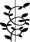 | América Central | Desconhecido. Cultivada em campos de regiões tropicais (herbácea trepadeira) | Polinizada por várias espécies de abelhas. No Brasil, por abelhas solitárias grandes (mamangava-de-chão ou Bombus morio) e abelhas nativas como a mandaçaia ou Melipona quadrifasciata e a arapuá ou Trigona spinipes, além de Apis sp.; na Europa, só a abelha Apis mellifera. É uma espécie nativa da América do Sul, cultivada por indígenas há mais de 2.000 anos. Atualmente cultivada em áreas tropicais do mundo (comercialmente e em hortas caseiras). | |||
| Abobrinha | Cucurbita pepo | Américas (do Peru ao Sul dos Estados Unidos) | Desconhecido. Cultivada em campos de regiões tropicais (herbácea trepadeira) | Depende de polinizadores. No Brasil, da espécie de abelha nativa mandaçaia (Melipona quadrifasciata) e da abelha europeia (Apis mellifera). Na Europa é polinizada por Bombus terrestris e Apis mellifera. Cultivada há mais de 10.000 anos na região da América Central e provavelmente sul do México. | ||||
| Abrunho | Prunus spinosa | 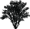 | Europa ocidental | Floresta mediterrânica (arbusto) | Em suas regiões de origem é polinizado principalmente por abelhas (Apis sp.) e por moscas. As sementes são dispersadas por mamíferos (raposa, fuinha) e aves (melros e tordos). | |||
| Açafrão (parte da flor – anteras) | Crocus sativus | 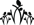 | ||||||
| Açaí | Euterpe oleracea | |||||||
| Acelga | Beta vulgaris var. cicla | |||||||
| Acerola | Malpighia glabra | |||||||
| Acuri, bacuri1 | Attalea phalerata | |||||||
| Àgave, sisal | Agave spp. | |||||||
| Agrião | Larry | |||||||
| Aipo, salsão | First | |||||||
| Albaricoque, damasco | Mark | |||||||
| Alcachofra | Jacob | |||||||
| Alcaçuz, regaliz | Larry | |||||||
| Alcaparra | Mark | |||||||
| Alecrim | Jacob | |||||||
| Alface | Larry | |||||||
| Alfavaca, alfavaca-de-folha-larga, basilicão | Larry |
Lista alfabética de espécies vegetais
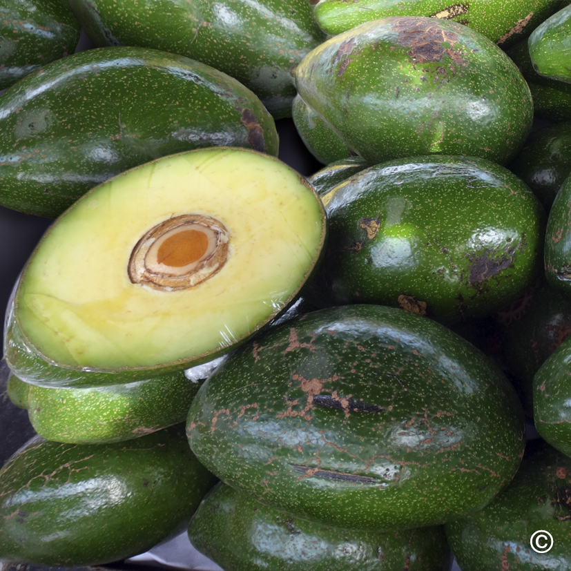
Nome Comum
Origem geográfica
Abacate
Nome científicoPersea americana
Tipo
Parte
América do Norte (México)
Bioma/Habitat ou de naturalizaçãoFlorestas de regiões tropicais e subtropicais (árvore)
Polinização CaracterísticasMaior produção com polinizadores. É polinizado principalmente por dípteros (moscas) e outros insetos nativos, como abelhas sem ferrão (uruçu do litoral do Nordeste ou Melipona scutellaris), e vespas, mas também por outros insetos de origem europeia como a abelha Apis sp., uma espécie de mosca e, de forma secundária, por formigas. Cultivado há mais de 10.000 anos nas Américas, provavelmente é originário da região central do México.
Dispersão-
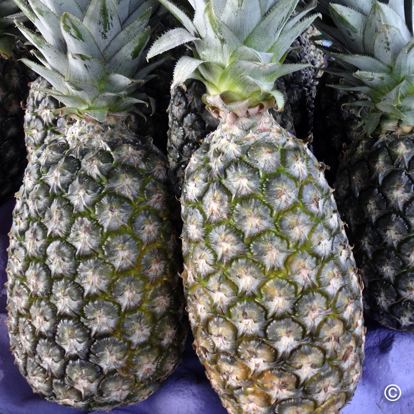
Nome Comum
Origem geográfica
 Características
Características
Abacaxi
Nome científicoAnanas comosus
Tipo
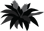
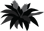
Parte
América do Sul
Bioma/Habitat ou de naturalizaçãoSavanas
Cerrado (bromeliácea)
Os beija-flores são seus principais polinizadores naturais. A planta é nativa da América do Sul e originária de áreas entre Brasil e Paraguai. Existem evidências de que sua domesticação pode ter sido iniciada entre 6.000 e 10.000 anos atrás.
Dispersão-
Nome Comum
Origem geográfica
Características
Abiu
Nome científicoAnanas comosus
Tipo
Parte
América do Sul
Bioma/Habitat ou de naturalizaçãoSavanas
Cerrado (bromeliácea)
Os beija-flores são seus principais polinizadores naturais. A planta é nativa da América do Sul e originária de áreas entre Brasil e Paraguai. Existem evidências de que sua domesticação pode ter sido iniciada entre 6.000 e 10.000 anos atrás.
Dispersão-